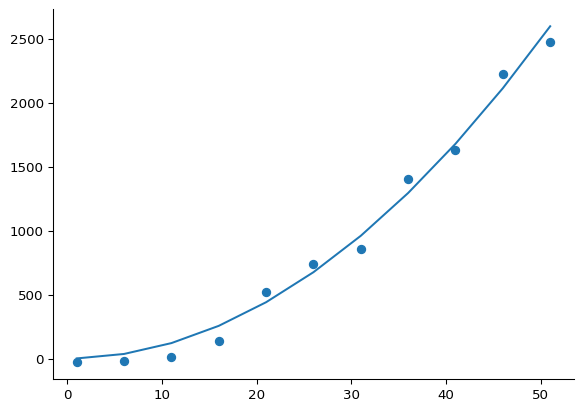
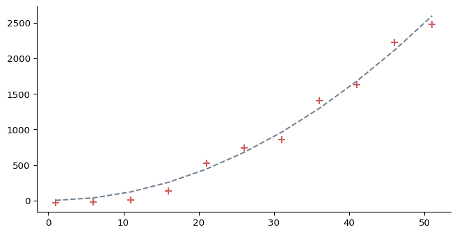
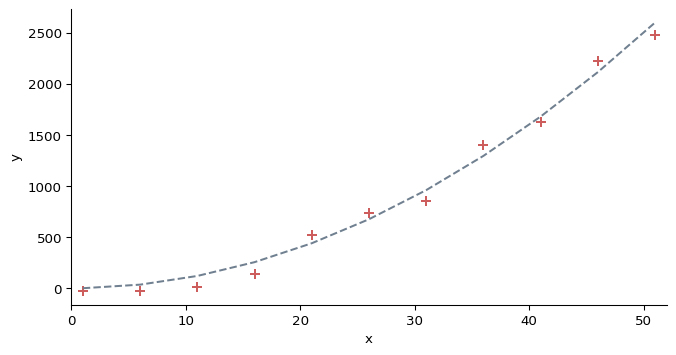
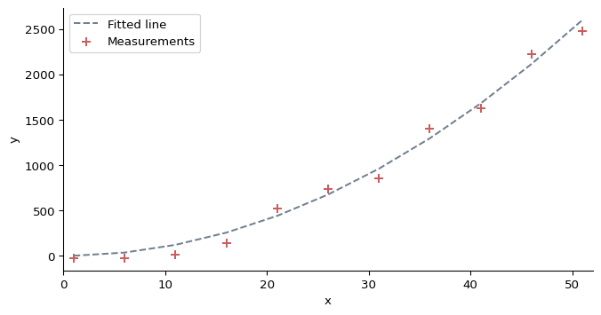
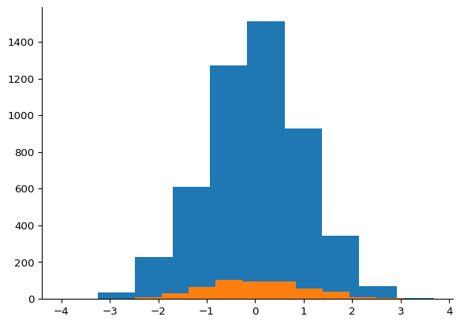
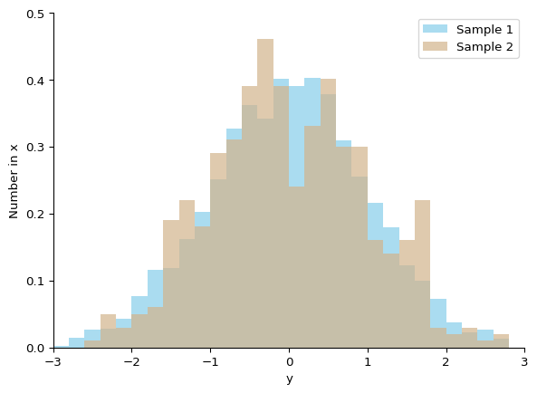

import matplotlib.pyplot as pltPlotting with matplotlib
One way to plot a graph in Python is to use the matplotlib package.
Matplotlib is a powerful and widely-used Python library for creating static, animated, and interactive visualizations. It provides a flexible framework for generating a wide variety of plots and charts, making it a popular choice for data analysis and scientific research. With matplotlib, you can customize every aspect of your figures, from colors and styles to labels and legends.
We start by importing the pyplot sub-module from matplotlib.
The most widespread convention is to use the shorthand plt to refer to this package with the as syntax and so we can import this in the following way:
Figure and Axes
There are two main interfaces for plotting using matplotlib.
The first is to use Pyplot (
plt) to create a plot directly e.g. usingplt.plot(). This is the type of syntax you may see often when looking online. This way of interacting with and plotting data was created to replicate the functionality of an alternative, and common programming language called MATLAB, which a lot of early Python adopters were familiar with.The second, more modern way to create plots is to use the object-oriented approach where the figure is created first and then explicitly referenced when creating a plot. One way to do this is by calling the
subplots()function to create aFigure(the canvas) and anAxes(the x-y axes) object which can then be used for plotting.
fig, ax = plt.subplots()We can plot using the ax object directly using whichever type of graph we want to create e.g. - for a simple line graph we can use the plot() function - for a scatter graph we can use the scatter() function. - for a 1D histogram we can the hist() function
You can also add multiple graphs to the same set of Axes to plot sets of data on top of each other:
import numpy as np
from numpy import random
rng = random.default_rng(seed=124)
x = np.arange(1, 56, 5)
y1 = x**2
y2 = x**2 + rng.normal(size=len(x))*100 # Add random noise to our scatter pointsfig, ax = plt.subplots()
ax.plot(x, y1) # Plot line plot
ax.scatter(x, y2) # Plot scatter plot as well
You may notice that unlike other Python you have been writing, in Jupyter notebooks you should keep your plotting code together in one code cell as this will immediately be displayed when the code cell is run.
To create another plot in a new cell you can create new Figure and Axes objects using the same names fig, ax or name them something different if you’d prefer.
Matplotlib sample plots - https://matplotlib.org/3.3.3/tutorials/introductory/sample_plots.html
Aside: subplots
You may ask why the function for creating a new plot is called subplots(). By default, this function allows you to create one plot on one figure, which is usually what you want for an initial plot. However, it is possible to use the subplots() function to create multiple plots on the same figure. One way to do this is by specifying the number of rows (nrows) and number of columns (ncols) you want when using the subplots() function. Note that this will pass back an array of Axes objects rather than just one which you can then use to plot.
We won’t explore this further, but for more details on how this is done have a look at the subplots demo.
Exercise A
For this exercise, we have created some random sample data which we can plot. Here we have created several numpy arrays each 100 elements long (based on num_points).
from numpy import random
rng = random.default_rng(seed=68)
num_points = 100
x_range = np.linspace(0.0, 1.0, num_points)
random_sample1 = rng.normal(0.1, 0.5, size=num_points)
random_sample2 = rng.random(num_points)- Create a scatter plot of
x_rangeversusrandom_sample1.
- Start by creating your Figure and Axes objects (fig, ax) using the subplots function
- Use the scatter method to plot your data using your Axes object
### ADD CODE HERE- Create a line plot of
x_rangeversusrandom_sample2
- As before, start by creating your Figure and Axes objects (fig, ax) using the subplots function
- Use the plot method to plot your data using your Axes object
### ADD CODE HEREAnnotating and adding features
As well as plotting you can, and should, add additional information to your plot as appropriate. For instance, you can:
- change the style, colour etc. of your initial plot (e.g. see examples within matplotlib decoration)
- add additional features such as axis labels, legend etc.
The code below demonstrates how we could customise the plot above using these inputs:
1. Using more of the available plotting options
fig, ax = plt.subplots(figsize=(8, 4))
ax.plot(x, y1, color="slategrey", linestyle="--")
ax.scatter(x, y2, color="indianred", marker='+', s=60)
We can include more inputs for both our subplots function and our plotting functions such as plot() and scatter():
- For the
subplots()initial step we specified the figure size,figsize, as an input. This is set using a tuple of (width, height) in inches. - For the
plotfunction we set:- the colour to be a named colour called “slategrey” using the
colorinput - the style of the line to be dashed, using “–” and the
linestyleinput
- the colour to be a named colour called “slategrey” using the
- For the
scatterfunction we set:- the colour to be a named colour called “indianred” using the
colorinput - the marker shape to a cross shape, using “+” and the
markerinput - size to be 60 (area of the marker) using the
sinput
- the colour to be a named colour called “indianred” using the
For in-built options see: - Colours - https://matplotlib.org/stable/gallery/color/named_colors.html - Line style - https://matplotlib.org/stable/gallery/lines_bars_and_markers/linestyles.html - Markers - https://matplotlib.org/api/markers_api.html
2. Setting properties on the plot
fig, ax = plt.subplots(figsize=(8, 4))
ax.plot(x, y1, color="slategrey", linestyle="--")
ax.scatter(x, y2, color="indianred", marker='+', s=60)
### ADDED x and y labels and an x limit
ax.set_xlabel("x")
ax.set_ylabel("y")
ax.set_xlim(0, 52)
Here we set additional parameters for the plot - the x and y labels and an x limit. We have done this by calling the relevant functions (e.g. set_xlabel, set_ylim) on our ax variable.
For some examples of different Axes functions of this type see: - Axes - labels and limits - https://matplotlib.org/stable/api/axes_api.html#axis-labels-title-and-legend - Axes - tick labels - https://matplotlib.org/stable/api/axes_api.html#ticks-and-tick-labels
3. Additional labelling - legend
fig, ax = plt.subplots(figsize=(8, 4))
### Added labels for each of the plots
ax.plot(x, y1, color="slategrey", linestyle="--", label="Fitted line") # label input added when plotting
ax.scatter(x, y2, color="indianred", marker='+', s=60, label="Measurements") # label input added when plotting
ax.set_xlabel("x")
ax.set_ylabel("y")
ax.set_xlim(0, 52)
### Asked for a legend to be displayed
ax.legend()
A legend can be created using the .legend() function (method) and this will use the label value supplied when creating each plot. If ax.legend() is not included then, even if a label variable is specified, no legend will be added to the plot.
See: - legend function - https://matplotlib.org/stable/api/_as_gen/matplotlib.axes.Axes.legend.html
Other plot types
We can also apply similiar principles to other plot types. We can generate some more random data to look at this. Here we have created two normal distributions containing different numbers of points.
# Create random numbers (normal distribution) to plot
from numpy import random
rng = random.default_rng(seed=68)
number_of_points_1 = 5000
number_of_points_2 = 500
x_rand1 = rng.normal(size=number_of_points_1)
x_rand2 = rng.normal(size=number_of_points_2)We could create a simple plot using the subplots function and the hist() function:
fig, ax = plt.subplots()
ax.hist(x_rand1)
ax.hist(x_rand2)(array([ 10., 30., 66., 103., 93., 93., 55., 40., 7., 3.]),
array([-2.48175617, -1.9278922 , -1.37402822, -0.82016424, -0.26630026,
0.28756372, 0.8414277 , 1.39529168, 1.94915565, 2.50301963,
3.05688361]),
<BarContainer object of 10 artists>)
Using the exact same data we could update our plot using relevant inputs for our hist function and setting values on our axis:
fig, ax = plt.subplots()
# Create an explicit range to use for our histogram bins
bins = np.arange(-3, 3, 0.2)
# Include colour, transparency (alpha), plot type (density) inputs as well as a label
ax.hist(x_rand1, color="skyblue", alpha=0.7, bins=bins, density=True, label="Sample 1")
ax.hist(x_rand2, color="tan", alpha=0.7, bins=bins, density=True, label="Sample 2")
# Update plotting area to label and set axes limits
ax.set_xlabel("y")
ax.set_ylabel("Number in x")
ax.set_xlim(-3, 3)
ax.set_ylim(0, 0.5)
# Add legend to the plot (uses labels defined above)
ax.legend()
For our histogram, in addition to options we used for our scatter and line plot, we have set more options available to us: - alpha - This allows us to make our data partially transparent to better view overlapping data - bins - We defined and included an input for the bin sizes rather than using the default - density - This is a plot type we can set which normalised our data for the different datasets. This can be useful if you are comparing datasets which have different sample sizes.
In general, you will need to look at the specific documentation for each of the the plot types to see what options are available.
Anatomy of a figure
This is a summary image to show the make up (anatomy) of a plot in matplotlib.

You can see some features we have described above such as “Figure”, “Axes”, “x axis label”, “y axis label”, “legend”. But you can also see how our inputs have influenced other aspects of the plot e.g. “Major tick”, “Minor tick”, “Major tick label”, “Minor tick label”, which were updated when we set the limits on the x and y axes, and “Markers” from our scatter plot which updated the marker style and colour.
Becoming familiar with this terminology when applied to a matplotlib figure allows you to put a name to any part of the plot you wish to modify and to dig into the features offered for how to update these plots.
Exercise B
- Create a scatter plot with the same data from Exercise A showing
x_rangeversusrandom_sample1adding or setting the following features:
Remember, you always need to recreate your fig and ax objects using the subplots function to create a new plot using Jupyter notebooks
### ADD CODE HERE (copy code from Exercise A1 to start)- Create a histogram plot overlaying data from
random_sample1andrandom_sample2.
- Experiment with different inputs to see if you can improve the default plot (e.g. setting the bin size, including transparency, changing the colours etc.)
- You can also look at the
hist()function documentation for more inputs to try e.g.histtype.
### ADD CODE HEREExtra. Create a plot containing both a scatter plot for x_range versus random_sample1 AND a line plot for x_range versus random_sample2. Add or set the following features: - changing the line style and colour - setting a title for your plot
Hint: Look at “set_” commands within https://matplotlib.org/stable/api/axes_api.html#axis-labels-title-and-legend
### ADD CODE HEREExtended: Pick an interesting plot from the matplotlib gallery and see if you replicate some of the additional features for these plots.
You can now proceed with the remaining exercises
- Exercise C - Plotting data from a file
- A fun session - Using matplotlib to create a fun plot